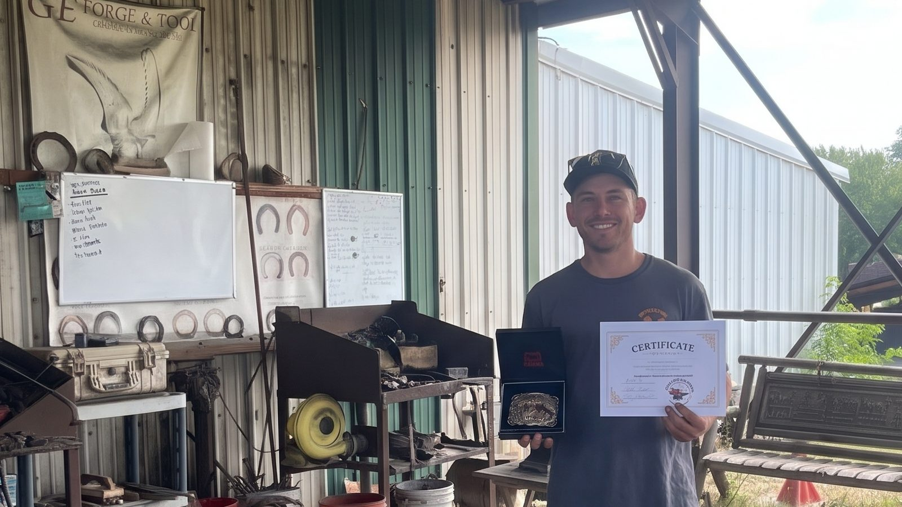

Farrier services across Otago
Shoeing, trimming and hoof care for horses and ponies. Luke is mobile and comes to your property.
See what Luke doesHoof care, done properly
From a routine trim to a remedial shoeing job, every horse gets the same care and attention.
Shoeing
Hot and cold shoeing matched to your horse, its feet and the work it does. From paddock ponies to competition horses.
Trimming
Regular trims to keep barefoot horses and ponies balanced, comfortable and sound.
Remedial work
Help with cracks, flares, under-run heels, laminitis and other hoof problems, working alongside your vet where needed.
Young horses
Calm, patient handling for foals and youngsters having their feet picked up and trimmed for the first time.
Straightforward, reliable hoof care
He comes to you
Luke travels across Otago to shoe and trim at your place. All you need is a flat, dry spot with good light and your horse caught and ready.
On a regular cycle
Most horses need the farrier every six to eight weeks. Luke can book your horses onto a regular cycle so their feet never get too long between visits.
Honest advice
Shoes or barefoot, what is going on with a hoof, and what will actually help. Luke tells you what your horse needs and nothing it doesn't.
Serving horse owners across Otago
Luke is based in Otago, New Zealand, and travels to properties, stables and farms around the region.
Not sure if Luke covers your area? Get in touch. He may be able to fit you in on a run nearby.
- Dunedin
- Mosgiel & the Taieri
- Outram
- Waikouaiti & Palmerston
- Milton
- Balclutha & Clutha
- Lawrence
- Middlemarch
- Ranfurly & the Maniototo
- Alexandra & Clyde
- Cromwell
- Wānaka
- Queenstown
Need a farrier?
Call or text Luke to book a visit or ask a question. He comes to you, anywhere in Otago.